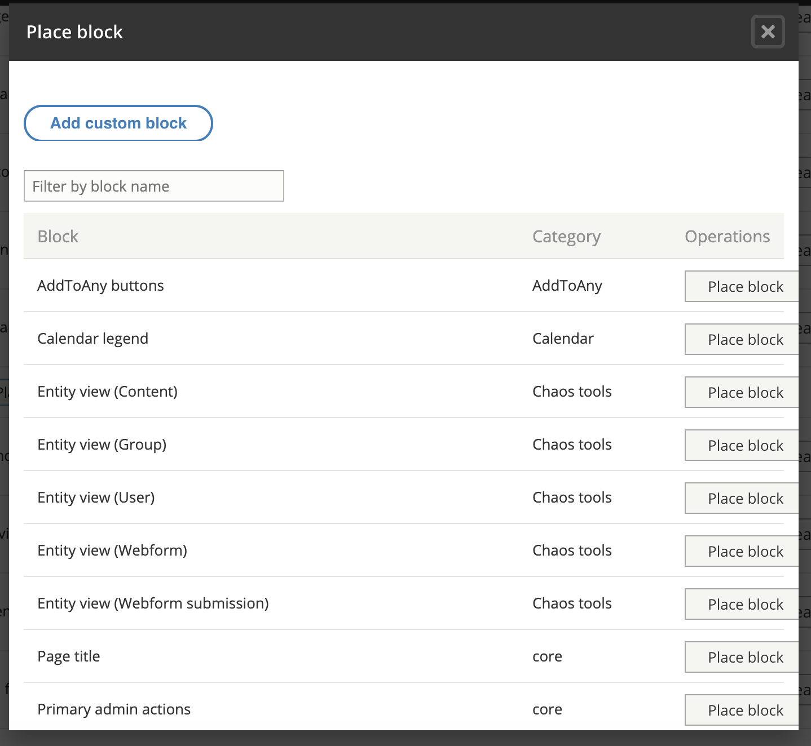

Custom blocks¶
Contents:
Drupal Blocks Overview¶
Blocks are managed under Structure.
- Blocks layout => this is where block placement is managed
- Custom block library => this is where custom blocks are created and edited.
Placing a block¶
To place a block, go to Structure => blocks layout and click place block next to the region where the block should appear.
Note: if the block title needs to be hidden, from the configuration drop down next to the block where it appears, select “Configure” and uncheck the display title box.